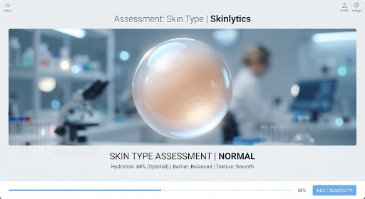
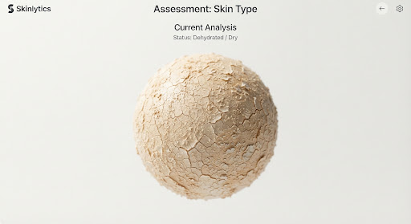
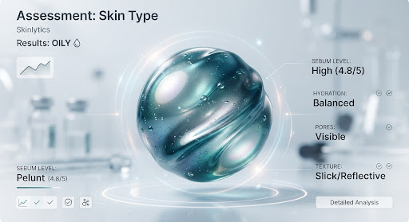
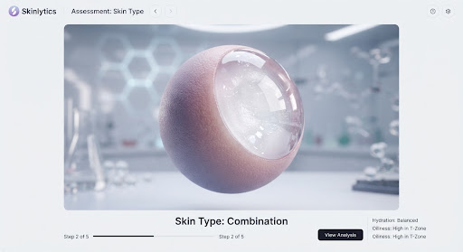
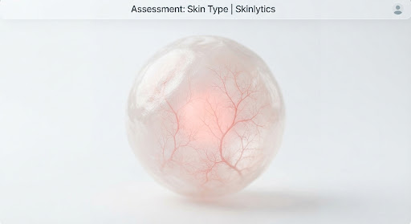

Our AI uses this baseline to calibrate its diagnostic model for your unique skin chemistry.

Balanced & Even
Feels hydrated and elastic without excess oil.

Tight & Matte
May feel flaky or tight, especially after washing.

Shiny & Porous
Presence of shine and enlarged pores across face.

Mixed Zones
Oily T-zone (forehead/nose) with dry or normal cheeks.

Reactive & Thin
Prone to redness, itching, or burning sensations.
3 questions to pinpoint your type
1. How does your skin feel 1 hour after washing?